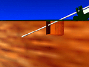
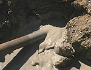
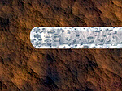
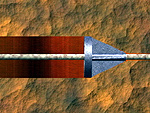
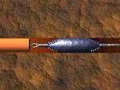
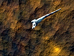
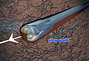
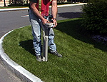
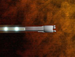
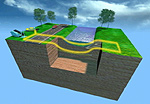

What is Directional Boring?
Directional Boring, also known as Horizontal Directional Drilling (HDD is the most efficient method to install underground utilities. Directional boring eliminates the need for open trenching or open cutting roadways, reducing interruption to traffic and disturbance to landscape and existing surfaces.
HDD Applications
Horizontal Directional Drilling (HDD), also called Directional Boring and directional drilling, is a method of installing underground pipes and conduits from the surface along a prescribed bore path. Installation lengths up to 6500' have been completed and diameters up to 48" have been installed in shorter runs. Most installations are considerably shorter and smaller diameter. The process is used for installing telecommunications & power cable conduits, water lines, sewer lines, gas lines, oil lines, product pipelines and casings used for environmental remediation. It is used for crossing waterways, roadways, congested areas, environmentally sensitive areas and any area where other methods are more expensive or not feasible. Use of HDD is growing rapidly and is expected to continue to increase for the foreseeable future.
- Less traffic disruption
- Lower cost
- Deeper installation possible
- Longer installation possible
- No access pit required
- Shorter completion times
- Directional capabilities
- Safer for the environment
The HDD Procedure
Planning
|  | Pilot Hole The process begins when the directional drill machine pushes a bore head connected to hollow pipe into the ground at an angle. As each joint of drill pipe is pushed into the ground a new one is added behind and the joints torqued tight using a hydraulic vise. |
|  | Drilling Fluid From the bore head flows a high pressure jet of drilling (boring) fluid which is generally a mixture of bentonite clay and water. Boring is accomplished through the cutting action of the jet of fluid and/or a rotating a drill bit. In hard, non-jettable soils, a drill bit can be turned by rotating the drill pipe or with a mud motor which converts the hydraulic pressure of the fluid to mechanical rotation. The drilling fluid cuts soil, suspends and carries cuttings out of the bore hole, seals the bore hole, lubricates and cools the pipe string. |
|  | |
|  | Reaming Upon reaching the exit point, the bit is detached and the end of the drill pipe is attached to a reamer or hole opener (for rock) if the bore hole must be enlarged. The reamer is pulled back while rotating the drill pipe with as many consecutive passes as required. Drill pipe is added behind the reamer or hole opener so that there is always drill pipe in the bore hole. |
|  | Pullback When the bore hole is approximately 25% larger than the pipe to be installed, the end of the pipe is connected to a packer/reamer or barrel reamer and then a swivel attached to the pipe to be installed and pullback commences. For some telecommunications or power cable projects, the drill pipe itself becomes the conduit and is left in the ground upon reaching the exit point. This type of installation is known as "drill and leave". |
|  | Steering - Jettable Soils In jettable soils, an angled bit is used and the drill pipe is rotated, if necessary, to bore straight. To steer, rotation is stopped, the angle of the bit is aligned to the desired direction and forward thrust is applied. The directed jet of the drilling fluid and forward thrust cuts a new path. |
|  | Steering - Rock In rock, a mud motor is used to rotate the bit and the drill string is not continuously rotated. Steerage is accomplished by rotating the angle of the mud motor to the desire direction. |
|  | Locating & Guidance - Walkover The most commonly used equipment for determing the location of the bore head is called a 'walk-over' locating system. A sonde (transmitter) behind the bore head registers angle, rotation, magnetic direction and temperature data. The information is then encoded into an electro-magnetic signal which is transmitted through the ground to the surface. At the surface a receiver is manually positioned over the sonde signal and the signal decoded and steering directions relayed to the operator of the drill machine. |
|  | Locating & Guidance - Downhole When conditions do not allow a receiver to be positioned over the sonde or interference causes degradation of the signal, a more sophisticated 'downhole system' is used. The most commonly used type of downhole system is called a 'wire-line' and uses a wire to transmit the data up the inside of the drill pipe. At the surface the data from the wire is decoded by a computer to provide depth, angle, rotation, direction (azimuth) and other information. Gaining in popularity are newer downhole wireless systems which transmit the data through the ground via an electo-magnetic signal to a stationary receiver. To compensate for potential magnetic interference, an artificial electro-magnetic grid is created at the surface using what is called a Tru-Traker� system. |
|  |